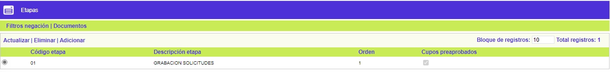
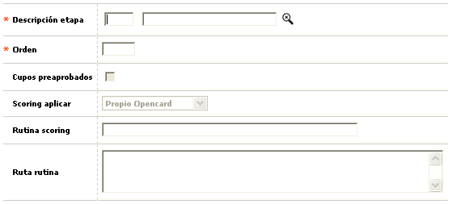
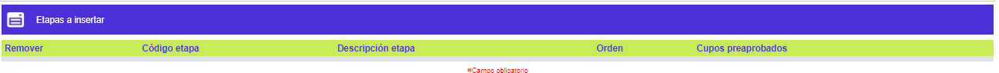
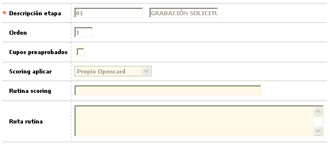

Parámetros solicitudes por producto
Etapas: En esta opción se definen condiciones específicas para cada combinatoria producto / tipo de solicitud, sobre las etapas que debe surtir, los filtros a aplicar en cada una de ellas y los documentos que se deben anexar. En el título del formulario se despliega la información correspondiente al tipo de solicitud y el producto para los cuales se están definiendo parámetros, y que corresponden al registro seleccionado en la opción Solicitudes.
El formulario contiene los enlaces: Actualizar,Eliminar y Adicionar Adicionalmente, cuenta con las opciones adicionales: Filtros negación, y Documentos, y un botón en la parte superior para volver al formulario de Solicitudes.

Adicionar: Si el usuario invoca la opción Adicionar se despliega un formulario con los siguientes bloques:

Descripción etapa |
Campo que posee lista de valores poblada en la opción Etapas de los parámetros de solicitudes, de la que se selecciona cada una de las etapas que deberá surtir cada combinatoria producto / tipo de solicitud. Debe tenerse en cuenta que cuando para el producto se ha definido que NO emite plástico, no se deben seleccionar en este campo las etapas de realce, sobreflex de clave y empaque, envío a mensajería y acuse recibo de entrega ni aquellas otras que sólo aplican para productos que SI emiten plástico como materialización de la tarjeta. |
Orden |
En este campo numérico de 2 dígitos, obligatorio, se registra la secuencia en la que las etapas deberán surtirse. |
Cupos preaprobados |
Campo en el que se indica si para esa combinatoria tipo de solicitud / producto, los cupos entran preaprobados o no, y sólo aplica para la etapa de Grabación. |
Scoring aplicar |
En este campo con lista de valores debe seleccionarse entre Rutina personalizada o Propio OpenCard, el procedimiento a utilizar en el proceso de scoring y sólo se activa para la etapa de Calificación. |
Rutina scoring |
Campo en el que debe registrarse el nombre del procedimiento asociado y solo aplica para cuando se ha señalado Rutina personalizada en el campo Scoring aplicar. |
Ruta rutina |
Si el scoring a aplicar a las solicitudes corresponde a aplicaciones propias de la entidad, dentro de este campo se registra la ruta o path en la que se ubican los programas requeridos. |
Después de haber ingresado los datos de cada etapa, se van adicionando una a una mediante el segundo botón del wizard, para luego desplazarse a la segunda página donde se muestra el resumen de todas, desplegando para cada una los campos Código etapa, Descripción, Orden, Rutina Scoring, Ruta rutina, Scoring aplicar, y Cupos preaprobados. El formulario cuenta con un check que permite marcar aquellas etapas que se deseen Remover.
Es importante para el usuario tener en cuenta, que en este proceso inicial de adición el sistema requiere que las etapas sean ingresadas de manera que tengan un orden estrictamente secuencial, puesto que de lo contrario no se permitirá guardar los registros en la base de datos.

Actualizar: Al activar ese enlace se despliega un formulario en el cual los únicos campos modificables son: Cupos preaprobados, Rutina scoring, y Ruta rutina.

Solicitudes | Cupos extendidos | Relaciones laborales | Cupos mín y máx por rango |Copiar parámetros